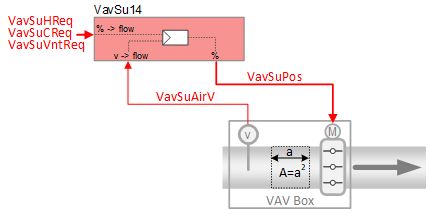
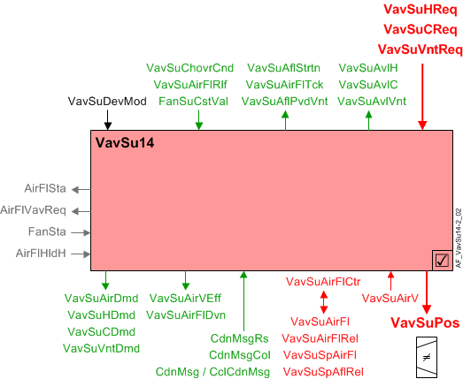
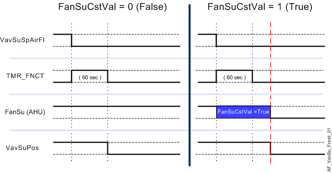

供气 VAV 盒，速度传感器 (VavSu14)
 | 该应用程序功能操作阻尼器，使用internal air volume flow controller将测量的空气体积流量驱动到空气体积流量设定点。 为了计算空气体积流量，该 AF 使用duct area calculation和输入来自air velocity sensor. 风量流量设定值是根据接收到的供暖、制冷和通风请求信号（来自房间控制器）计算得出的。 有一个可选的收集输入，用于冷梁或冷天花板处的冷凝检测。 支持的功能air balancing都包括在内。 |
Required elements and how to configure them:
元素 | I/O | 信号类型 |
|---|---|---|
VavSuPos "Setpoint for supply air VAV position" | On-board output, Setpoint for supply air VAV position | 0…10Vor3-position |
orKNX PL-Link device, Supply air VAV | Position control | |
VavSuAirV "Supply air VAV air velocity" | On-board input, Supply air VAV air velocity | 0…10V |
Function
下图显示了与此应用程序函数关联的 BACnet 对象。主要信号流程总结如下：
VAV 供应加热、冷却或通风请求（VavSuHReq / VavSuCReq / VavSuVntReq) 被接收并处理为 VAV 供应风门位置的输出信号 (VavSuPos).
基本功能：接受来自相关房间控制器的请求信号并将其映射到适当的风量流量设定点；将设定值与接线盒中的空气体积流量进行比较；在将结果作为命令输出到控制设备的对象之前，将结果传递给设备模式逻辑开关。

| 命令或请求（或相关） |
| 条件或状态或可用性的通知 |
| 设备模式 |
| 互锁（内部信号，不是 BACnet 对象；有关其他信息，请参阅互锁部分） |


Interlocks
房间自动化联锁是协调 HVAC 设备之间交互的内部信号。它们在 ABT 站点或 Web 界面中不可见，但与它们关联的参数可见。有关影响联锁功能的参数的提示，请参阅注释列。
信号 | 类型 | 方向 | 描述 | 评论 |
|---|---|---|---|---|
AirFlCReq | 布尔值 | In | 气流冷却要求 |
|
AirFlHReq | 布尔值 | In | 气流加热要求 |
|
AirFlHldH | 布尔值 | In | 保持气流以供加热 |
|
AirFlSta | 布尔值 | 出去 | 气流状态 | 有关名为“...AirFlSta”的参数，请参阅配置部分 |
AirFlVavReq | % | 出去 | 空气流量 vav 请求 | 风扇供电盒应用。 |
FanSta | 布尔值 | In | 风扇状态 | 在串联风扇供电盒应用中，参数EnMonFanSta必须=是。有关其他信息，请参阅配置部分。 |
Air flow controller
PID 空气流量控制器（VavSuAirFlCtr) 将接线盒的风量流量与当前 VAV 送风流量设定值进行比较，并进行调节VavSuPos必要时将箱流量保持在设定值。
如果需要，可以通过提供 2 位设定点信号来实现两位操作。
Air flow setpoint selection:在控制模式下（VavSuDevMod= 2) 空气流量设定值 (VavSuSpAirFl) 是满足以下要求所需的最大值：
- Cooling
- Heating
- Ventilation
- Air flow support for cooling coil
- Air flow support for heating coil
尽管请求值以百分比为单位，但选择最大值的比较是以物理空气流量单位进行的。这是因为每种请求类型的气流限制（最小流量和最大流量）都不同。
从百分比到供暖、制冷和通风的空气流量单位的映射包括低端的升压，开关点为 4%，滞后为 2%。因此，在其相应的气流值从 0 上升到请求的最小气流之前，请求百分比必须上升到 4% 以上。

升压的潜在用途包括：
- Keeping the flow setpoint high enough to support heat transfer from a coil
- Keeping the flow setpoint high enough for effective sensing
Saturation signal:饱和信号VavSuAflStrtn是一个二进制对象，当气流控制回路在超过内置时间延迟的时间内无法获得足够的空气来达到设定点时，该对象为 True（“饥饿”）。延迟结束后，开环操作开始。
Note
VavSuAflStrtn如果参数始终关闭EnStrtnCal= 0（否）。这允许用户从饱和压力重置系统中排除特定终端。
Air flow deviation signal:送风流量偏差（VavSuAirFlDvn) 信号（以百分比表示）用于空气处理机组的风扇速度（静压）重置策略。它是通过测量送风管道的气流并将其与气流设定值进行比较而获得的。
VavSuAirFlDvn = VavSuSpAflRel减VavSuAirFlRel
VavSuAirFlDvn如果条件无效，则等于 0。
Relief input signal:VAV 盒子的二元气流释放对象（VavSuAirFlRlf) 可以由空气处理装置设置为 True。这样做是为了减轻管道系统中的流动阻力，以保持适当的静压。 VAV 控制器通过增加其气流设定值（VavSuSpAirFl).
当设备模式 = 控制模式并且两者都EnRlf（启用救济）和VavSuAirFlRlf等于开，VavSuSpAirFl将被设置为其当前值或参数的最大值AirFlRlf.
Note
救济对供应链VAV空气需求信号没有影响VavSuAirDmd.
Available status:当 VAV 供应风门可用于加热、冷却或通风时，指示可用性的相应二进制输出信号（VavSuAvlH, VavSuAvlC, VavSuAvlVnt）将为“是”（可用）。
要使可用状态为“是”，设备模式必须等于“控制模式”（调制），并且 VavSuChovrCnd（送风 VAV 转换条件）不能等于“两者”。
输出信号VavSuAflPvdVnt是可用于通风的空气流量。什么时候VavSuAvlVnt为 True，最大值 (VavSuAflMaxVnt）被转移到VavSuAflPvdVnt.
VavSuAflPvdVnt（VAV 为通风提供的送风流量）是来自送风 VAV 箱的最大流量（以工程单位表示）的总和。这些值在每个供应 VAV 中设置，以获得段中的最大流量。
Minimum ventilation flow:在没有 DCV（需求控制通风）的安装中，只要需要通风，就会应用最小一次空气流量。这有效地取代了最小冷却值和最小加热值。在使用 DCV 的安装中，当计算出的通风需求最低且需要通风时，将应用一次空气流量值。

有关配置最低通风级别的详细信息，请参阅房间级别通风控制 AF (VavVntCtl.xx)。
Device mode:设备模式的输入信号是多状态值。
VavSuDevMod支持以下状态：
- Off
- Control mode (modulation)
- Max.air vol.flow
- Min.air vol.flow
- Smoke ctrl.air flow setp (manually entered damper setpoint value for smoke control)
Fan coasting feature:风扇惯性滑行功能可防止 AHU 风扇惯性滑行时房间供风风门过早关闭。在操作模式之间切换（例如，从舒适模式切换到经济模式）期间可能会发生这种情况。
风扇滑行功能在以下情况下激活：
- The room supply air damper is the only damper that is open – all other VAV supply air dampers are closed.
- The AHU supply fan has been turned off and is coasting down.
- The air flow setpoint signal (VavSuSpAirFl), while on its way to zero, falls below the air flow demand hysteresis setting (HysAirFlDmd).
当这些条件成立时，布尔供给风扇惯性滑行信号（FanSuCstVal) 将等于 1 (True)，并且阻尼器将重置为其最后（之前）的操作位置/值。这使得风门在风扇惯性停车时保持打开状态，以防止供应管道过压。
除了将风门固定到位的风扇滑行信号外，内部计时器功能也会在以下情况下被激活：VavSuSpAirFl最初跌破HysAFlSta。风扇惯性滑行信号和计时器（60 秒）必须同时完成（返回 False），房间供风风门才能关闭。见下图。
Note
内部定时器独立运行，无论FanSuCstVal。一旦计时器被激活，房间送风风门就会冻结在适当的位置，直到计数器达到零，之后风门可能会关闭。

Supply chain interface: 空气有四个需求输出信号。
- VavSuCDmd - Supply air VAV cooling demand
When cooling is available, VavSuCDmd is the percentage value of the cooling request from the room (otherwise it is 0). - VavSuHDmd - Supply air VAV heating demand
When heating is available, VavSuHDmd is the percentage value of the heating request from the room (otherwise it is 0). - VavSuVntDmd - Supply air VAV ventilation demand
When ventilation is available, VavSuVntDmd is the percentage value of the ventilation request from the room (otherwise it is 0). - VavSuAirDmd - Supply air VAV air demand for plant mode
VavSuAirDmd is a multistate value that equals PltOpMod (VavSuSpAirFl must be greater than the switch-on point for air flow demand, SwiOnAirFlDmd). If PltOpMod is "Depressurize" or "Emergency off", VavSuAirDmd will equal PltOpMod regardless of VavSuSpAirFl value.
AHU changeover condition signal:多态 VAV 电源转换条件输入信号 (VavSuChovrCnd）来自房间协调函数（RCoo）。它指示中央 AHU 当前加热/冷却可用状态。支持四种状态：
- Neither
- Heating
- Cooling
- Neutral
“中性”意味着加热和冷却 PID 控制器均已启用，并且进入房间的空气不冷也不热。
Configuration
 Objects
Objects
描述 | 目的 | 类型 | 默认值 |
|---|---|---|---|
Supply air VAV initial flow coefficient | VavSuFlCoefIni | ACnfVal | 0 |
Supply air VAV flow coefficient | VavSuFlCoef | ACnfVal | 0.78 |
Air flow settings | |||
Supply air VAV smoke control air volume flow setpoint | VavSuSpAflSmk | ACnfVal | 50.0 [m3/h] |
Supply air VAV maximum air volume flow for cooling | VavSuAirFlMaxC | ACnfVal | 100.0 [m3/h] |
Supply air VAV minimum air volume flow for cooling | VavSuAirFlMinC | ACnfVal | 50.0 [m3/h] |
Supply air VAV maximum air volume flow for heating | VavSuAirFlMaxH | ACnfVal | 100.0 [m3/h] |
Supply air VAV minimum air volume flow for heating | VavSuAirFlMinH | ACnfVal | 50.0 [m3/h] |
Supply air VAV maximum air volume flow for ventilation | VavSuAflMaxVnt | ACnfVal | 100.0 [m3/h] |
Supply air VAV minimum air volume flow for ventilation | VavSuAflMinVnt | ACnfVal | 0.0 [m3/h] |
Duct | |||
Supply air VAV duct area | VavSuDuctArea | ACnfVal | 0.05 [m2] |
Supply air VAV duct shape 1:Rectangular | VavSuDuctShape | MCnfVal | 2:Round |
Supply air VAV dimension A | VavSuDmsnA | ACnfVal | 20 [cm] |
Supply air VAV dimension B | VavSuDmsnB | ACnfVal | 20 [cm] |
 Parameters
Parameters
描述 | 范围 | 默认值 |
|---|---|---|
Nominal air volume flow | AirFlNom | 100.0 [m3/h] |
Setpoint selector for extract air VAV box 0:False（使用的送风流量设定值） | SpSelVavEx | 1:Supply air flow |
Air flow monitoring | ||
Enable monitoring for missing air volume flow 0:No | EnMonNoAirFl | 0:No |
Interlocks | ||
Switch-on point for air volume flow state | SwiOnAirFlSta | 10 [%] |
Hysteresis for air volume flow state | HysAirFlSta | 5 [%] |
Enable monitoring for fan state 0:No | EnMonFanSta | 0:No |
Deviation calculation | ||
Enable deviation calculation 0:No | EnDvnCal | 1:Yes |
Saturation calculation | ||
Enable saturation calculation 饱和信号计算逻辑： 0:No | EnStrtnCal | 1:Yes |
Saturation level | StrtnLvl | 90 [%] |
Air volume flow error limit | AirFlErLm | 0 [%] |
Switch-on delay saturation | DlyOnStrtn | 60 [s] |
Air flow demand | ||
Switch-on point for air flow demand | SwiOnAirFlDmd | 4 [%] |
Hysteresis for air flow demand | HysAirFlDmd | 2 [%] |
Relief functionality | ||
Enable relief 0:No | EnRlf | 0:No |
Air volume flow relief | AirFlRlf | 50.0 [m3/h] |
Internal settings – do not change | ||
Air volume flow unit | AirFlUnit | [m3/h] |
Interface
界面 | 描述 | 类型 | 参考号 | 拥有者 | |
|---|---|---|---|---|---|
VavSuPos | Supply air VAV position | AO | ◉ | Room segment / Device | |
VavSuAirV | Supply air VAV air velocity | AI | ◉ | Room segment / Device | |
VavSuAirVEff | Supply air VAV effective air velocity | ACalcVal | ● | - | |
VavSuSpAirFl | Supply air VAV setpoint for air volume flow | APrcVal | ● | - | |
TrndVavSuSpAfl | Trend for supply air VAV setpoint for air volume flow | FtrSel | ● | - | |
VavSuSpAflRel | Supply air VAV setpoint for relative air volume flow | ACalcVal | ● | - | |
VavSuAirFl | Supply air VAV air volume flow | ACalcVal | ● | - | |
TrndVavSuAirFl | Trend for supply air VAV air volume flow | FtrSel | ● | - | |
VavSuAirFlRel | Supply air VAV relative air volume flow | ACalcVal | ● | - | |
VavSuAirFlDvn | Supply air VAV air volume flow deviation | ACalcVal | ● | - | |
VavSuAflStrtn | Supply air VAV air volume flow saturation 0:Satisfied | BCalcVal | ● | - | |
VavSuDevMod | Supply air VAV device mode 1:Off | MPrcVal | ● | - | |
VavSuAirFlCtr | Supply air VAV air flow controller | 控制器 | ● | - | |
VavSuCReq | Supply air VAV cooling request | ACalcVal | ● | - | |
VavSuHReq | Supply air VAV heating request | ACalcVal | ● | - | |
VavSuVntReq | Supply air VAV ventilation request | ACalcVal | ● | - | |
VavSuAvlC | Supply air VAV available for cooling 0:No | BCalcVal | ● | - | |
VavSuAvlH | Supply air VAV available for heating 0:No | BCalcVal | ● | - | |
VavSuAvlVnt | Supply air VAV available for ventilation 0:No | BCalcVal | ● | - | |
FanSuCstVal | Coasting value of supply air fan 0:Off | BCalcVal | ● | - | |
VavSuChovrCnd | Supply air VAV changeover condition 1:Neither | MPrcVal | ● | - | |
VavSuAirDmd | Supply air VAV air demand for plant mode 1:Off | MCalcVal | ● | - | |
VavSuAirFlRlf | Supply air VAV air volume flow relief 0:Off | BPrcVal | ● | - | |
VavSuCDmd | Supply air VAV cooling demand | ACalcVal | ● | - | |
VavSuHDmd | Supply air VAV heating demand | ACalcVal | ● | - | |
VavSuVntDmd | Supply air VAV ventilation demand | ACalcVal | ● | - | |
VavSuAflPvdVnt | Supply air VAV provided air volume flow for ventilation | ACalcVal | ● | - | |
VavSuAirFlTck | Supply air VAV air volume flow tracking | ACalcVal | ● | - | |
VavSuFlCoefCal | Supply air VAV calculated flow coefficient | ACalcVal | ● | - | |
VavSuBalCmd | Supply air VAV balancing command 1:Ready | MTrgVal | ● | - | |
CdnMsgCol | Collection of condensation message | ColView | ● | - | |
| CdnMsgRs | Result of condensation message 0:Normal | BCalcVal | ● | - |
CdnMsg | Condensation message 0:Normal | BCalcVal | ◉ | Room segment / Field device | |
CclCdnMsg | Cooling coil condensation message 0:Normal | BCalcVal | ◉ | Room segment / Field device | |
VavSuSplyAir | Supply air VAV supply chain for air | GrpMbr | ● | Room segment | |
VavSuBalSta | Supply air VAV balancing state 1:Initial | MCnfVal | ● | - | |
VavSuBalMod | Supply air VAV balancing mode 1:Maximum cooling | MCnfVal | ● | - | |
VavSuAirFlHood | Supply air VAV air volume flow at hood | ACnfVal | ● | - | |
VavSuBalModRec | Supply air VAV recorded balancing mode 1:Maximum cooling | MCnfVal | ● | - | |
VavSuAflHodRec | Supply air VAV recorded air volume flow at hood | ACnfVal | ● | - | |
VavSuFlCoefRec | Supply air VAV recorded flow coefficient | ACnfVal | ● | - | |
VavSuFlCoefIni | Supply air VAV initial flow coefficient | ACnfVal | ● | - | |
VavSuAirFlRec | Supply air VAV recorded air volume flow | ACnfVal | ● | - | |
VavSuPosRec | Supply air VAV recorded position | ACnfVal | ● | - | |
VavSuDuctArea | Supply air VAV duct area | ACnfVal | ● | - | |
VavSuDuctShape | Supply air VAV duct shape 1:Rectangular | MCnfVal | ● | - | |
VavSuDmsnA | Supply air VAV dimension A | ACnfVal | ● | - | |
VavSuDmsnB | Supply air VAV dimension B | ACnfVal | ● | - | |
VavSuFlCoef | Supply air VAV flow coefficient | ACnfVal | ● | - | |
VavSuSpAflSmk | Supply air VAV smoke control air volume flow setpoint | ACnfVal | ● | - | |
VavSuAirFlMaxC | Supply air VAV maximum air volume flow for cooling | ACnfVal | ● | - | |
VavSuAirFlMinC | Supply air VAV minimum air volume flow for cooling | ACnfVal | ● | - | |
VavSuAirFlMaxH | Supply air VAV maximum air volume flow for heating | ACnfVal | ● | - | |
VavSuAirFlMinH | Supply air VAV minimum air volume flow for heating | ACnfVal | ● | - | |
VavSuAflMaxVnt | Supply air VAV maximum air volume flow for ventilation | ACnfVal | ● | - | |
VavSuAflMinVnt | Supply air VAV minimum air volume flow for ventilation | ACnfVal | ● | - | |
Engineering and commissioning
- 检查风门执行器安装是否正确。执行器接线错误或安装不当是常见问题的主要原因。
- 相对空气流量 (VavSuAirFlRel) 根据箱体空气流量 (AirFlNom) 的标称（额定）值标准化为 VavSuAirFl 的百分比 (0 - 100%)。
- VavSuSplyAir 组成员 – 向中央 AHU 提供信息以进行管道静压重置：
RHvacCoo_xx 包含一个 GroupMember (SplyAir) 监控来自中央功能 SplyAir 组管理器的 /receives 数据。中央功能应位于包含 ALL 中央协调功能的房间自动化站中，这些功能来自由中央系统（例如家长）服务的房间（例如儿童）。验证组管理员对象和分配的组成员对象中组编号的分配。确保同一组类别中的组管理员的组号在网络中唯一。
有关配置最低通风级别的详细信息，请参阅房间级别通风控制 AFs（VavVntCtl、FcuVntCtl）。